개요
무엇을 만들었고, 나와 AI가 각각 무엇을 했는지
1.1한눈에 보기
| 게임 | 마을 상권 경영 타이쿤 × 헌터 방치형 RPG (세로 9:16 모바일). 용사들이 사냥하고 돌아오면, 영주인 플레이어가 상점가에서 바가지 요금으로 물건을 팔아 마을과 용사단을 함께 키웁니다. |
|---|---|
| 결과물 | 웹 단일 HTML (272KB) · Android APK (21.9MB) · Unity 6 프로젝트 · 기획서 4종 × 8버전 (docx·pptx 64개) · 변경이력.xlsx |
| 기간 | 2026-11-13 ~ 11-23 (작업한 날 6일) |
| 내가 한 일 | 초안 기획서 작성 · 명령 작성 · 개선 우선순위 결정 · AI의 확인 질문에 답 · 결과 플레이와 판단 |
| AI가 한 일 | 웹·Unity 구현 · 스프라이트 제작 · APK 빌드 · 기획서 생성 · 자동 플레이 검증 · APK 실행 테스트와 개선안 작성 (Claude Code 여러 세션) |
1.2이 포트폴리오에서 보여 주려는 것
출발점: 내가 쓴 초안 기획서
AI에게 준 것은 기획서 1개, 참고 이미지 6장, 스프라이트 가이드 1개, 그리고 명령 한 문단이었습니다.
2.1초안 기획서 구성 (5장)
| 장 | 내용 |
|---|---|
| 1. 프로젝트 개요 | 장르·플랫폼, 레퍼런스, 아트·카메라, 수익 모델 |
| 2. 화면 구성 | 상단 HUD · 사냥터 · 상점가 · 하단 5탭 독 (9:16 세로) |
| 3. 재화 3종 순환 | 부산물 → 골드 → 명성 인장의 유입·소비·병목 |
| 4. 시스템 설정 | 상점·바가지·고블린, 이중 가챠·대장간 품질·레이드, BM 상품 |
| 5. Stage 1~20 | 구간별 몬스터·해금 건물·리텐션 훅 |
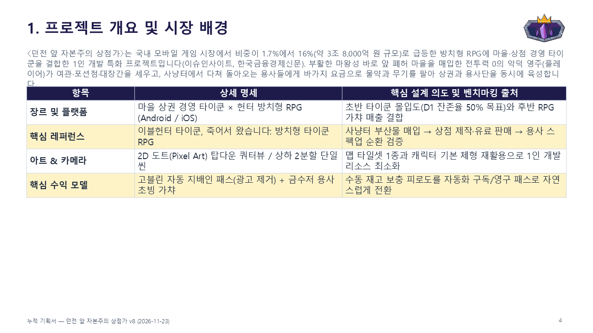
2.2첫 명령 (원문)
모바일게임으로 제작하고 싶어. 실행파일과 유니티로 수정 가능한 파일로 제공해줘
아트는 별도 세션(세션2)에 맡겨 코드 작업과 동시에 진행
초안의 '상하 분할 단일 화면'을 로비(전투)·상점가 2씬으로 바꿈
모든 그림이 같은 규격·팔레트를 따르도록 요구
바로 실행할 파일 + Unity에서 고칠 수 있는 프로젝트
2.3첫 명령의 결과
- 웹 빌드 + Unity 프로젝트: 화면을 코드가 만들도록 해서 두 버전이 같은 규칙을 공유합니다. Unity는 씬 자동 생성·원클릭 빌드 메뉴를 포함합니다.
- 스프라이트 99종: 아트 세션이 64색 공통 팔레트로 그렸습니다. Python·Aseprite가 없는 PC라서 Node.js로 PNG 저장기부터 직접 만들어 코드로 그렸습니다.
- 밸런스: 자동 플레이 시뮬레이션으로 첫 보스 레이드(켈베로스) 토벌까지 약 33~37분이 되도록 맞췄습니다.
- 초안과 달라진 점은 이유와 함께 기록했습니다. 예: 방어구점을 대장간에 통합, 주점 소환 임계치 조정, 오프라인 통행세 1/10 (누적 기획서 6.3절).
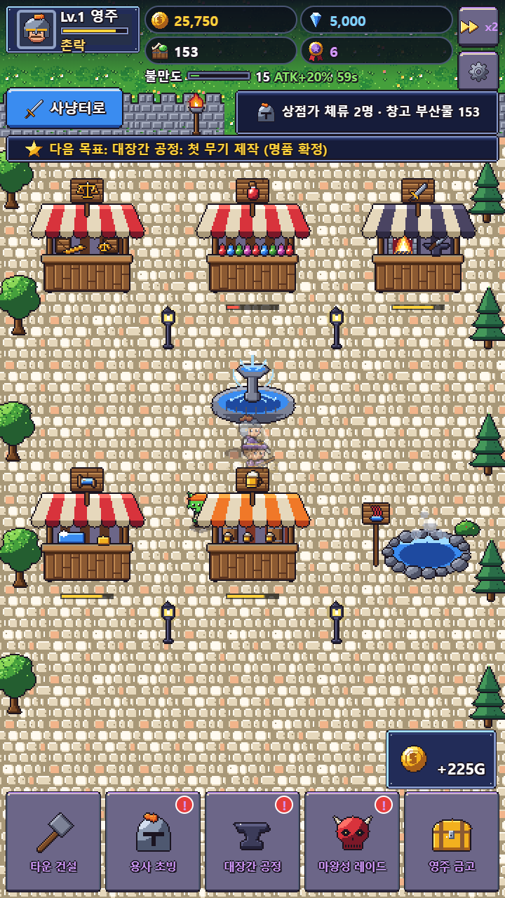
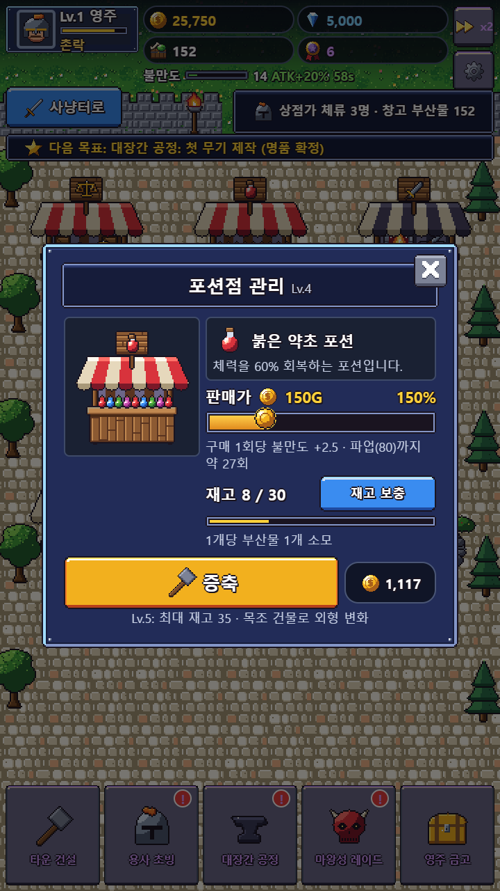
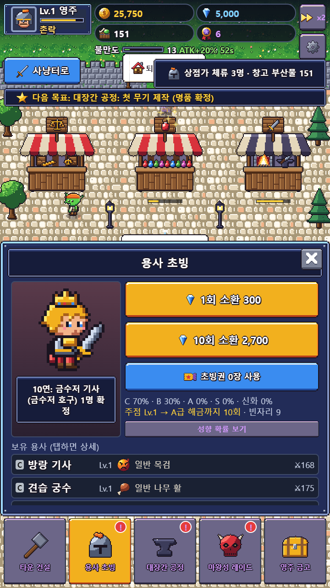
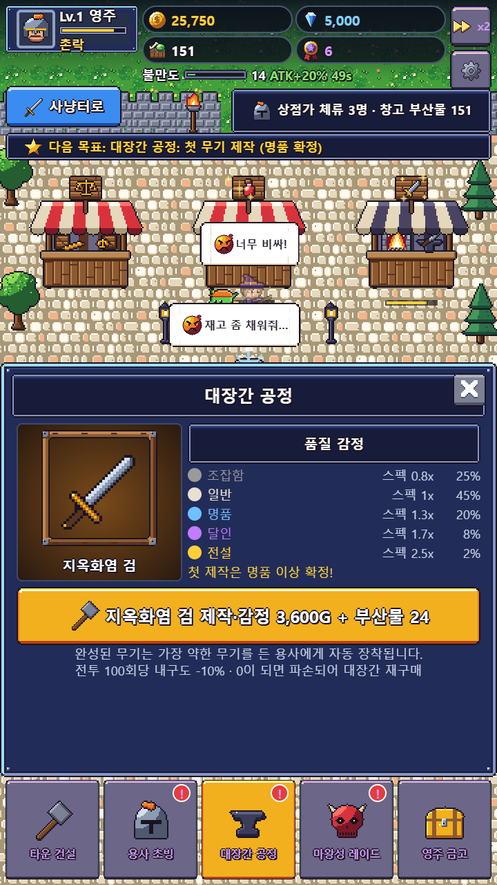
제작 체계: 일을 세션별로 나눠 맡기기
한 대화에 모든 일을 몰지 않고, 역할이 다른 AI 세션이 파일로 결과를 주고받게 했습니다.
3.1세션 구성
3.2사용한 도구
| 도구 | 쓴 곳 |
|---|---|
| Claude Code | 모든 세션 (구현·아트·문서·QA). 세션끼리는 MD 파일과 결과물 파일로 연결 |
| REA (리버스 엔지니어링 도구) | 빌드된 APK의 IL2CPP 메타데이터·서명·매니페스트 분석 (QA 세션) |
| BlueStacks | APK 실기 실행 테스트 (25분 플레이, 뒤로 가기·저장 유지 확인) |
| 헤드리스 Chrome (CDP) | 웹 빌드를 자동 조작해 검증하고 기획서용 화면 54장 촬영 |
| Node.js (docx · pptxgenjs · exceljs) | 기획서 docx·pptx와 변경이력 xlsx 생성 |
| Unity 6 (IL2CPP · ARM64) | Android APK 빌드 (30MB 전송 한도에 맞춰 20MB로 최적화) |
명령 기록: 20개 명령이 게임을 바꾼 순서
모든 명령은 변경이력.xlsx에 날짜·원문·수정 사항·검증 결과와 함께 남아 있습니다.
4.1단계별 흐름
4.2명령 전체 (눌러서 펼치기)
111-13기획서를 바탕으로 게임 제작 (세션2에서 스프라이트, 로비 = 전투, 상권 입장 버튼, 모바일, 실행파일 + Unity)첫 빌드
211-14"유니티 설치했어. apk파일 만들어줘"빌드
311-14"됐어"빌드
411-14"빌드 다 됐어? / 끝나면 알려줘"빌드
511-14"파일을 보내줘"APK 20MB
611-14"이 개선안에 따라 개선해주고, 로비화면에서 뒤로 가기 시 자동저장 및 종료하시겠습니까 팝업…"개선안 v1
711-14"웹 버전에도 똑같이 반영해줘"웹 동기화
811-16"초안기획서를 변경하지 말고 … 기획서를 ppt와 doc으로 … 앞에 내용은 그대로 두고 뒤에 추가 … 엑셀로 명령어·수정사항·결과·날짜 정리"기획서 v1
911-16용사 보관함(최대 1,000명, 구간별 확장 비용) · 무기 분해·보관함 · 공정 결과 선택 · 10/100회 감정 · 목표 등급까지 감정기획서 v2
1011-16(⑨ 후속) Android APK 빌드 결과APK
1111-17"UI 용어 24종과 공통 설계 가이드.md 학습해줘"UI 기준
1211-17"그리고 반영해서 수정해줘"기획서 v3
1311-17(⑫ 후속) Android APK 빌드 결과APK
1411-17보관함 영주 레벨 연동 · 영주 금고 = 인벤토리 · 설정 창 · 버튼 위치 · 상점(현금·재화·광고)기획서 v4
1511-18"stage 16부터 … 경고창은 가운데에서 … 이 개선안으로 개선해서 보내줘. unity 파일도 수정해줬으면 좋겠어"기획서 v5
1611-18"Stage 16 전에 레이드를 누르면 빨간 알림을 가운데 위쪽에서 뜰 수 있게 해줘"기획서 v6
1711-18(⑯ 후속) APK 빌드 결과APK
1811-23"여기서 개선할 점에서 첫번째 개선해줘" (경쟁작 비교 분석 보고서 F1)기획서 v7
1911-23"2번째 개선사항을 고치는데, 오프라인 최대보상은 2시간 기준이고, 추후 추가될 강화 시스템으로 늘어날 수 있도록…"기획서 v8
2011-23"3번째 개선사항도 진행하는데, 왼쪽 상단에 ? 버튼을 통해 확인할 수 있도록 해줘."기획서 v8
4.3명령 하나 뜯어보기: ⑨ 보관함·분해·일괄 감정
내가 쓴 조건
- 보관 최대 1,000명, 10·20·30·40까지 무료
- 500까지는 20단위로 골드, 1,000까지는 보석
- 무기 보관함은 용사 초빙과 비슷하되 재화 소모를 다르게
- 공정 후 장착 / 보관 / 분해 선택
- 10회 · 100회 감정, 목표 등급이 나올 때까지 감정
- 결과는 간략히 보고 한 번에 선택해서 분해, 나머지는 보관
AI가 기록한 해석 (누적 기획서 7.5절)
- 보석 구간도 +20칸 단위로 확장
- '재화 소모를 다르게' = 무기 보관함은 골드 대신 부산물·보석을 절반 수준으로
- 목표 감정은 최대 500회에서 멈춤 (재료 소진 시에도 멈춤)
- 방출은 1명당 100G, A급 이상이 섞이면 확인 창
- 저장 키는 유지해서 이전 저장본과 호환
명령에 없던 빈칸은 AI가 정하되, 무엇을 어떻게 정했는지 기획서에 남기게 했습니다. 그래서 나중에 그 판단만 골라 바꿀 수 있습니다.
4.4AI가 묻고, 내가 정한 것
기획 의도가 갈리는 지점은 AI가 혼자 정하지 않고 물어보게 했고, 답은 기획서의 '사용자 명령 원문' 절에 그대로 남겼습니다.
MD로 일하는 방식: 규칙을 파일로 고정하기
대화가 길어지거나 세션이 바뀌어도 같은 기준을 지키도록, 지켜야 할 약속은 MD 파일로 만들어 함께 줬습니다.
5.1네 가지 MD 파일
SPRITE_MANIFEST.md — 코드 ↔ 아트 세션
파일명·크기·프레임 순서(idle·walk·atk)·외곽선·팔레트·바라보는 방향을 표로 고정했습니다. 두 세션이 동시에 일해도 이름만 맞으면 게임에 바로 반영됩니다.
결과: 스프라이트 99종, 64색 공통 팔레트, PPU 32 · Point 필터
UI_용어_24종_설계가이드.md — UI 통일
레이아웃 7 · 구성 요소 9 · 효과 8개 용어와 적용 원칙 8개, 확인 기준을 담은 문서입니다. "학습해줘 → 반영해줘" 두 명령으로 게임 전체 UI를 점검했습니다.
결과: 팝업 초점, 키보드 조작, 선택 표시, 움직임 줄이기 (기획서 v3)
기획서/README.md — 버전 관리
초안 수정 금지 · 저장한 버전 파일 수정 금지 · 새 버전은 끝에 장을 덧붙이기 · 변경이력에 행 추가. 문서 세션은 매번 이 규칙부터 읽고 작업합니다.
결과: v1~v8 모든 파일 보존, 이전 내용 무손실
개선안.md — 테스트 결과를 다음 명령으로
QA 세션이 쓴 보고서를 그대로 메인 세션에 첨부해 "이 개선안에 따라 개선해줘"라고 명령했습니다. 문제·심각도·근거·제안이 표로 정리돼 있어 빠짐없이 대응할 수 있습니다.
결과: 개선안 v1(A~H) · v2(1-1~1-7) · 비교 보고서(F1~F3) 반영
5.2UI 가이드가 게임에 적용된 방식
| 가이드 항목 | 게임에 적용한 것 |
|---|---|
| Modal / Dialog | 열면 초점이 창 안으로, Tab은 창 안에서만 순환, 닫으면 연 버튼으로 복귀 |
| Tabs | 하단 5탭: 선택 시 금색 + 흰 하단 표시선 |
| Drawer | 탭 화면은 하단 반화면 드로어로 열어 위쪽 게임을 가리지 않음 |
| Toast | 긴 문장 줄바꿈, 레이드 잠김 알림만 세로 1/3 위치 |
| 움직임 줄이기 | 설정이 켜지면 팝업 등장·화면 흔들림·감정 연출 생략, 결과는 즉시 표시 |
| 원칙 5 (기존 구현 존중) | 디자인은 그대로 두고 부족한 부분만 보완 |
| 원칙 6 (플랫폼 맞춤) | 웹 접근성 구현을 Android에 억지로 옮기지 않음 |
| 원칙 8 (확인한 범위만 보고) | 실기기에서 못 본 동작은 '미검증'으로 기록 |
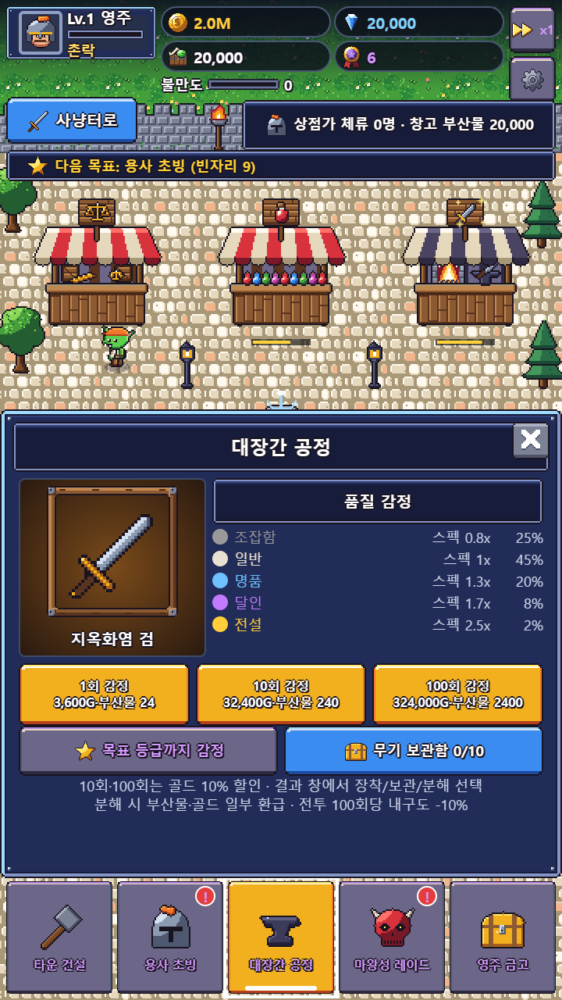
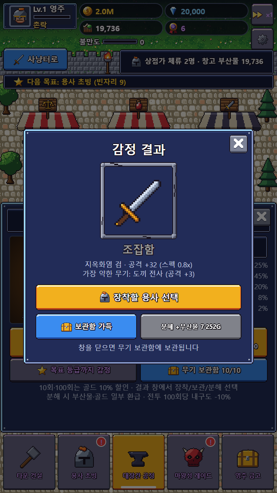
기획서 구조: 4종 문서 × 8개 버전
초안 양식(표지 → 번호 장 → 3열 표)을 그대로 따르고, 바뀐 것은 지우지 않고 뒤에 쌓습니다.
6.1문서 4종의 역할
| 문서 | 담는 내용 | v1 → v8 분량 (PPT 장 수) |
|---|---|---|
| 누적 기획서 | 초안 원문(1~5장) + 버전별 추가·변경 사항. 명령 원문·해석·검증 결과까지 남기는 기록용 문서 | 28 → 108쪽 |
| 시스템 기획서 | 규칙: 재화 순환, 전투·웨이브·보스, 용사 AI, 상점·불만도, 가챠, 대장간, 레이드, 저장 | 19 → 73쪽 |
| 세부 기획서 | 수치: 직업·등급·품질 테이블, 비용 곡선, 확률, 시간 상수 (게임 코드에서 계산) | 25 → 69쪽 |
| 콘텐츠 기획서 | 화면: Stage 1~20, 보스, 화면 구성, 아트 리소스 99종, 자동 촬영 화면 | 21 → 74쪽 |
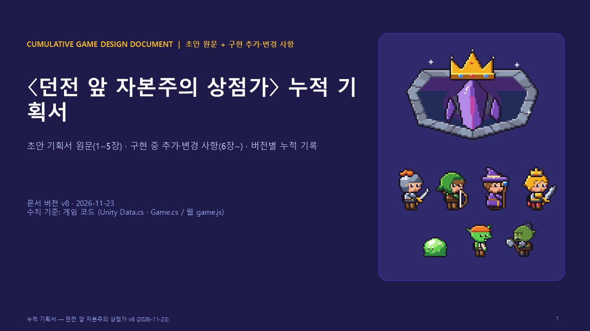
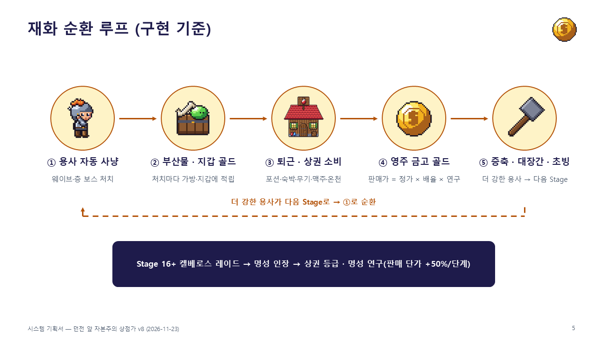
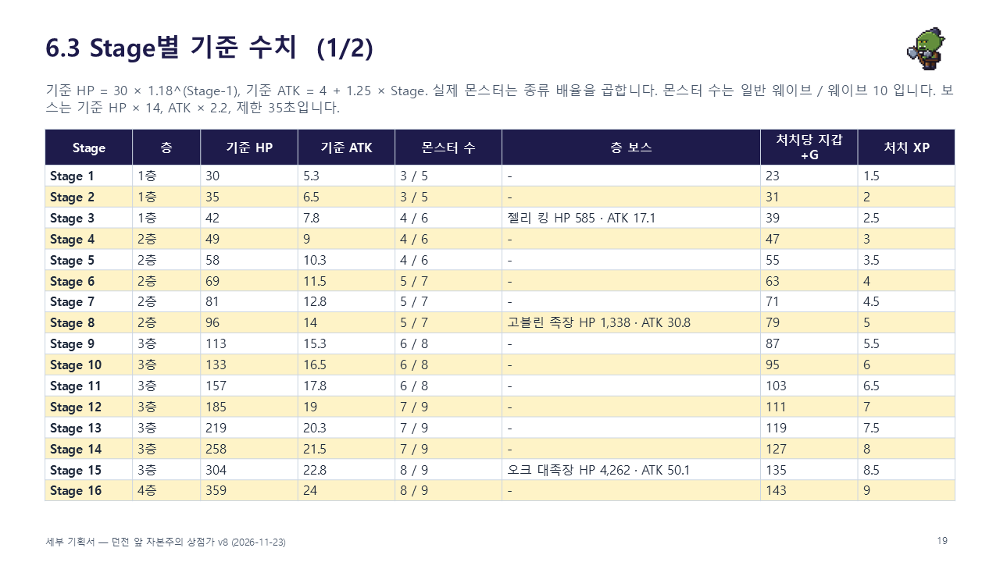
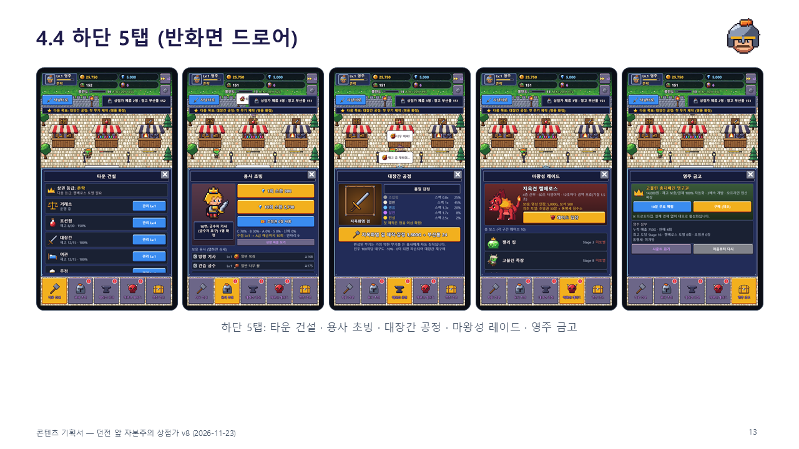
6.2누적 방식: 앞 내용은 한 글자도 바꾸지 않는다
새 버전은 직전 버전 전체 + 새 장 1개입니다. 회색은 그대로 둔 이전 내용, 파란색은 그 버전에 추가된 장입니다.
- 파일 이름:
문서이름_v버전_날짜(예: 누적기획서_v8_2026-11-23) - 앞 장의 수치가 낡으면 새 장에 "○장 수치 변경: 이전 값 → 새 값 (이유)"로 적습니다.
- 새 파일을 만든 뒤 이전 버전 본문이 그대로 들어 있는지 단락 단위로 비교했습니다.
6.3버전마다 같은 순서로 쓰는 장 (v2 ~ v8)
- 1개정 이력버전·날짜·근거 명령·주요 내용
- 2사용자 명령 원문내가 쓴 문장 그대로 (확인 질문에 대한 답 포함)
- 3구현 요약항목 · 구현 내용 · 비고 3열 표
- 4이전 문서 대비 변경 사항항목 · 이전 · 새 구현
- 5명령 해석 · 판단 사항명령에 없던 빈칸을 어떻게 채웠는지
- 6검증 결과무엇을 어떻게 확인했고, 무엇은 확인하지 못했는지
- 7남은 과제 · 확인 사항다음 명령으로 넘길 것
- 8명령 · 변경 이력 추가변경이력.xlsx에 추가한 행
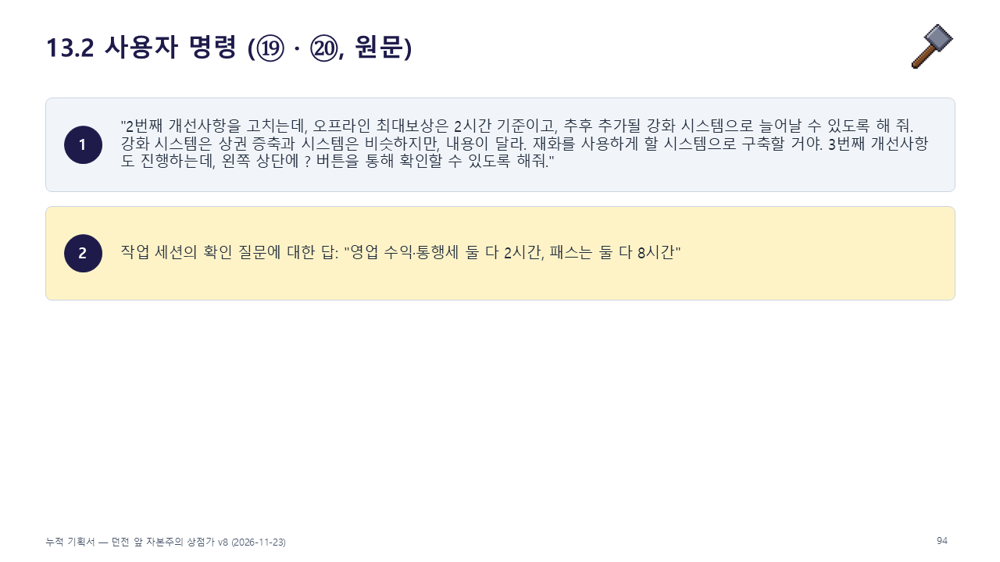
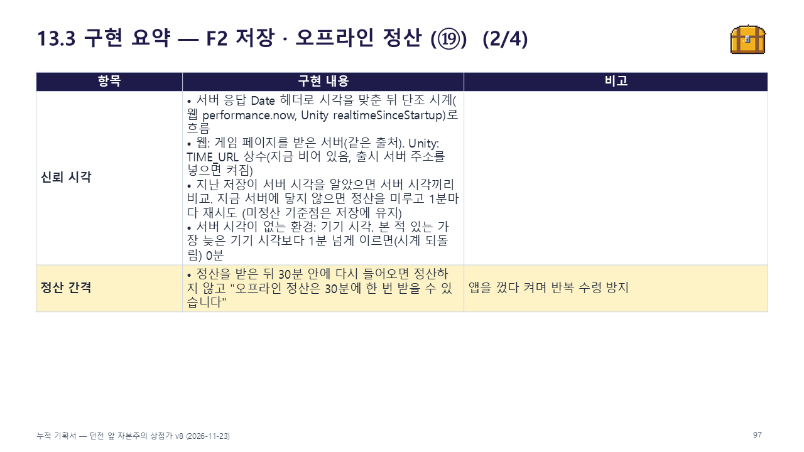
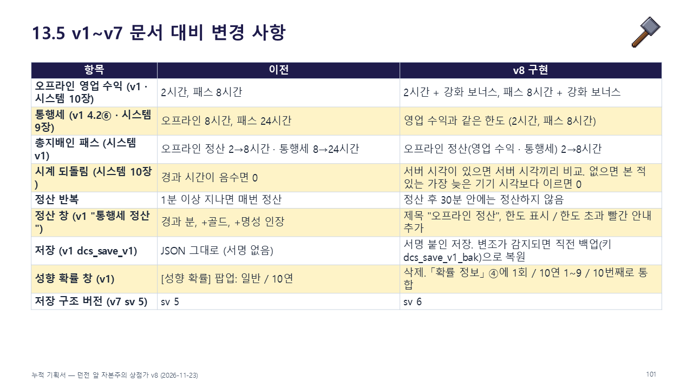
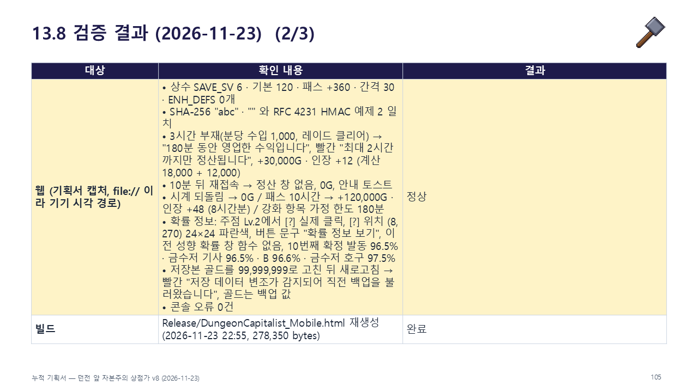
기획서가 작동하는 방식
기획서는 손으로 고치는 문서가 아니라, 게임 코드와 자동 촬영 화면에서 만들어지는 결과물입니다.
7.1명령 하나가 문서가 되기까지
7.2세 가지 출처를 분리했다
수치의 정답 = 게임 코드
세부 기획서 표는 Data.cs · Game.cs · game.js의 값으로 계산합니다. 버전마다 고정 사본(data_game_v1.js, v2.js…)을 두어 과거 문서의 숫자가 바뀌지 않게 했습니다.
화면 = 자동 촬영
버전마다 HTML 사본을 헤드리스 Chrome으로 열어, 실제 버튼을 누르고 찍습니다. 상태 조작은 사본에서만 해서 원본 게임은 건드리지 않습니다.
문장 = 버전별 part
content_*.js의 parts 배열에 버전별 블록(h1·h2·p·표·이미지)을 덧붙입니다. 같은 내용에서 Word와 PowerPoint를 동시에 만듭니다.
7.3실제 구조 (요약)
// 기획서/_도구/content_cumulative.js // 이미 발행된 part는 고치지 않고, 새 part를 끝에 추가한다 E.parts.push({ version: 'v8', date: '2026-11-23', blocks: [ { h1: '13. 추가·변경 사항 — v8', pageBreak: true }, { h2: '13.2 사용자 명령 (⑲ · ⑳, 원문)' }, { table: { head: ['항목', '이전', 'v8 구현'], rows: [ ... ] } }, ] }); # 문서 4종 × docx·pptx 다시 만들기 node build_docx.js 초안.docx .. images cumulative system detail content node build_pptx.js 초안.docx .. images cumulative system detail content
| 변경이력.xlsx 열 | 예시 (⑳) |
|---|---|
| 날짜 · 순번 | 2026-11-23 · 20 |
| 사용자 명령 | "3번째 개선사항도 진행하는데, 왼쪽 상단에 ? 버튼을…" |
| 수정·추가 사항 | [?] 버튼 + 확률 정보 창 5구역 |
| 결과 | 웹 검증, 캡처 3장, APK 빌드 성공, BlueStacks 미확인 |
| 관련 파일 | game.js, Screens.cs, Game.cs, 기획서 v8 |
| 비고 | v7 확인 요청은 아직 답 없음 |
검증 루프: AI가 만든 것을 AI가 다시 테스트
만든 세션과 다른 세션이 APK를 직접 플레이해 문제를 찾고, 그 보고서가 다음 명령이 됩니다.
8.1루프
8.2개선안 v1이 찾은 문제와 대응
| # | QA 세션이 찾은 문제 | 심각도 | 반영한 것 (명령 ⑥) |
|---|---|---|---|
| A | 10연 소환 때 빈자리가 2칸뿐인데 경고 없이 진행되고, B급 포함 8명이 반값으로 자동 환급됨 | 높음 | 정원 초과 사전 확인 창 + 높은 등급부터 남기기 |
| B | 포션 재고 0 → 매출이 2분 넘게 멈췄는데 알림 없음 | 높음 | 재고 20% 이하 말풍선 · 소진 알림 · 고블린 첫 1명 무료 |
| C | 바가지 200% → 3분 만에 파업, 초반엔 대응 수단 없음 | 높음 | 파업 배너 · 불만도 70 이상 깜빡임 · 분수대 연설 · "파업까지 약 N회" 표시 |
| D | 가격 슬라이더를 누르면 상점 창이 닫힘 (3번 모두 재현) | 중간 | 터치가 창 뒤로 전달되던 버그 수정 |
| E | 대장간 제작을 연타하면 확인 없이 계속 제작, 결과가 작게만 보임 | 중간 | 제작 확인 창 · 품질 결과 창 · 0.3초 연타 방지 |
| G | '상권 입장'과 '대장간 공정'이 같은 위치라 두 번 누르면 엉뚱한 창 | 낮음 | 씬 전환 후 0.4초 입력 잠금 |
| H | 인트로 팝업을 닫기 전에 전투가 진행됨 | 낮음 | 인트로·종료 팝업 동안 일시정지 |
8.3경쟁작 비교 분석으로 찾은 개선점 어라이즈 비교 자세히 →
신화 등급이 250회 동안 잠김, 천장 없음
→ 1회차부터 0.5% 개방, 신화 천장 120회.
20만 회 시뮬레이션 평균 81.6회 (이전: 250회 전 0%)
저장·오프라인 정산 조작 가능
→ 정산 한도 2시간 통합, 서버 시각 + 단조 시계, 저장 서명(HMAC-SHA256)과 변조 시 백업 복원
확률 정보가 흩어져 있음
→ 초빙 창 왼쪽 위 [?] 버튼으로 등급·직업·성향·보장 규칙을 한 창에
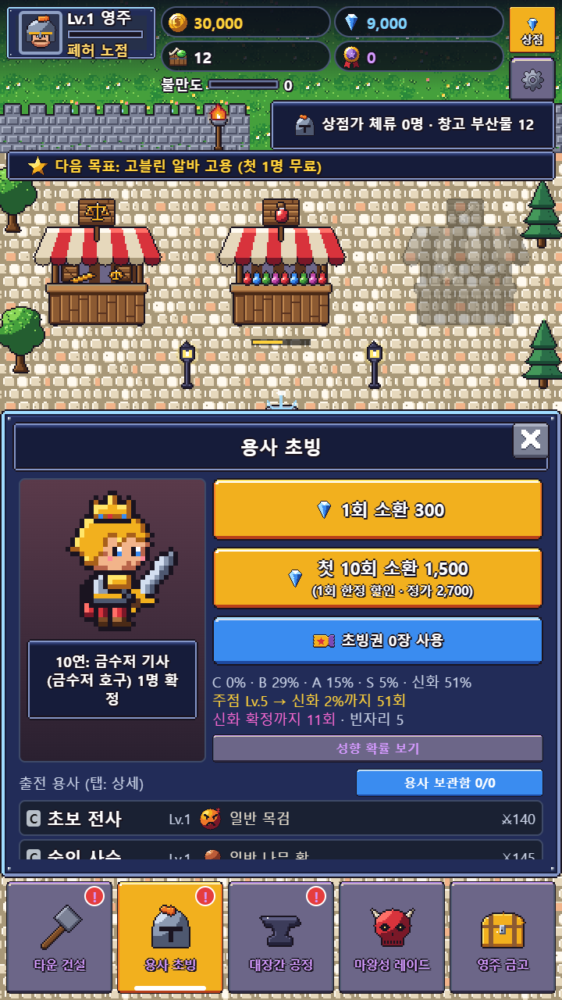
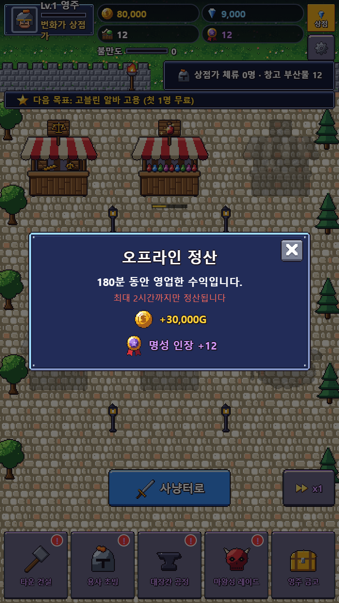


8.4확인하지 못한 것도 기록했다
- 움직임 줄이기: 코드 반영, 실기기 설정은 검증하지 않음 (에뮬레이터 시스템 설정을 바꾸지 않음)
- 레이드 잠김 알림 위치: 테스트 저장이 이미 Stage 20이라 기기에서는 재현 못 함, 웹에서만 확인
- v7 · v8 APK: 빌드 성공, BlueStacks가 꺼져 있어 기기 확인은 못 함
- 저장 서명: 키가 앱 안에 있어 손으로 고친 저장본을 막는 수준. 보석·소환의 서버 확정은 서버가 없어 미적용
v1 vs v8: 같은 동선으로 비교
두 버전을 같은 상태(Stage 9)에서 시작해, 같은 순서로 버튼을 누르도록 스크립트로 자동 플레이하고 녹화했습니다.
9.1나란히 비교 영상 (60초)
왼쪽 v1(11-14), 오른쪽 v8(11-23). 위쪽 파란 글씨가 그 장면에서 바뀐 점과 근거 명령입니다. v1에 없는 기능은 어둡게 표시했습니다. 흰 원은 자동 플레이가 누른 위치입니다.
9.2장면별로 달라진 점
| 장면 | v1 (11-14) | v8 (11-23) | 근거 |
|---|---|---|---|
| 용사 초빙 10연 | 정원이 차면 확인 후 환급 | 넘치는 용사는 보관함으로, 첫 10연 할인 | #9 #15 |
| 확률 정보 | 소비 성향 확률 표 1개 | [?] 버튼 → 등급·레벨·직업·성향·보장 5구역 | #20 |
| 대장간 | 1회 제작 → 가장 약한 용사에게 자동 장착 | 1·10·100회 일괄 감정, 10×10 결과에서 골라 분해 | #9 |
| 보관함 | 없음 | 무기·용사 보관함 (영주 레벨 연동 확장) | #9 #14 |
| 영주 금고 | 결제 데모 상품 1개 | 재화 인벤토리 → 상세 → 상점 | #14 |
| 설정 | 금고 안 사운드·초기화 버튼 | 톱니 → 영주 장부 · 사운드 · 처음부터 다시 | #14 |
| 레이드 잠김 | 맨 위 작은 알림 | 화면 1/3 지점 빨간 알림 (게임은 멈추지 않음) | #15 #16 |
| 보이지 않는 변화 | — | 신화 천장 120회, 정산 한도 2시간, 저장 서명, 키보드·초점 접근성 | #12 #18 #19 |
9.3버전별 영상 따로 보기
v1 2026-11-14 · 40초
v8 2026-11-23 · 57초
9.4버전별 대표 화면
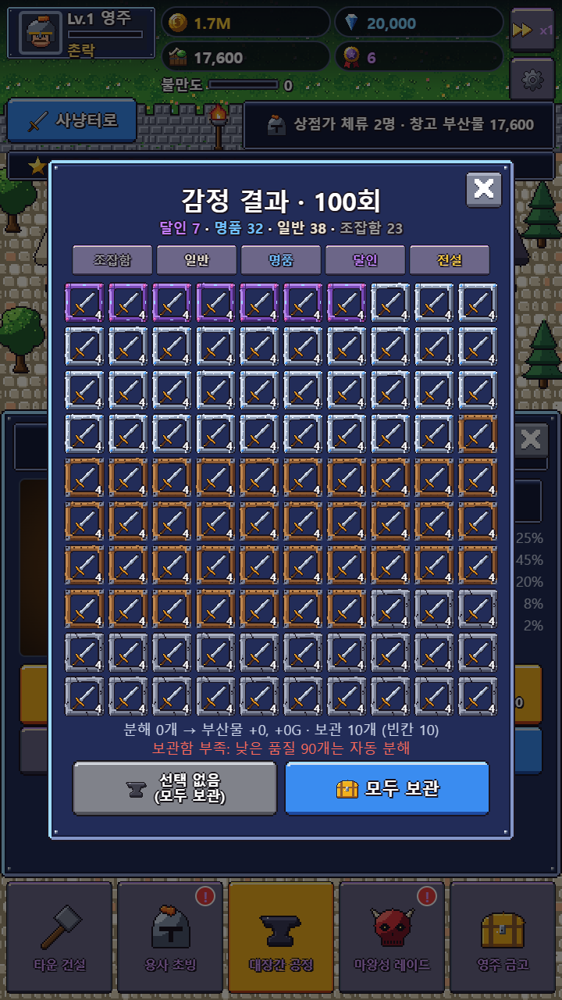
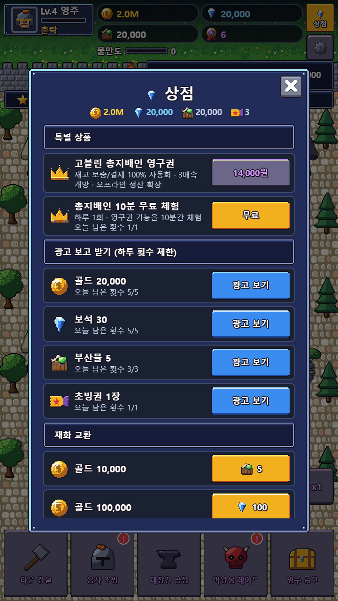
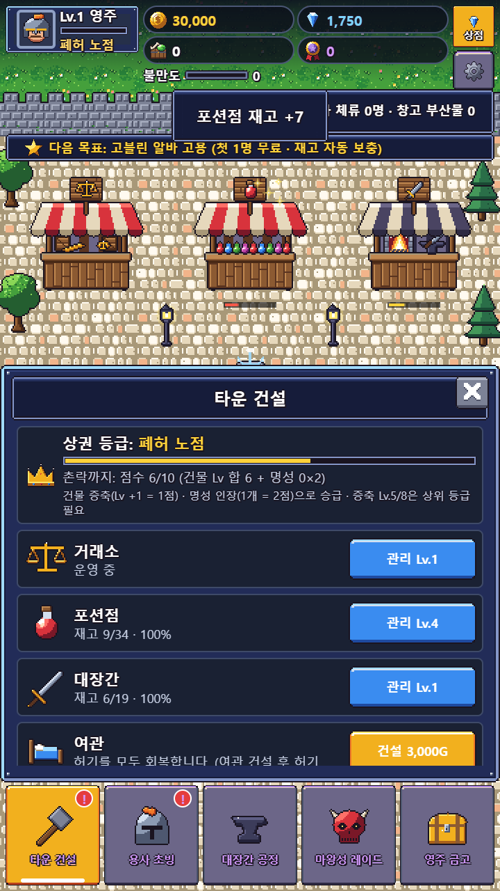
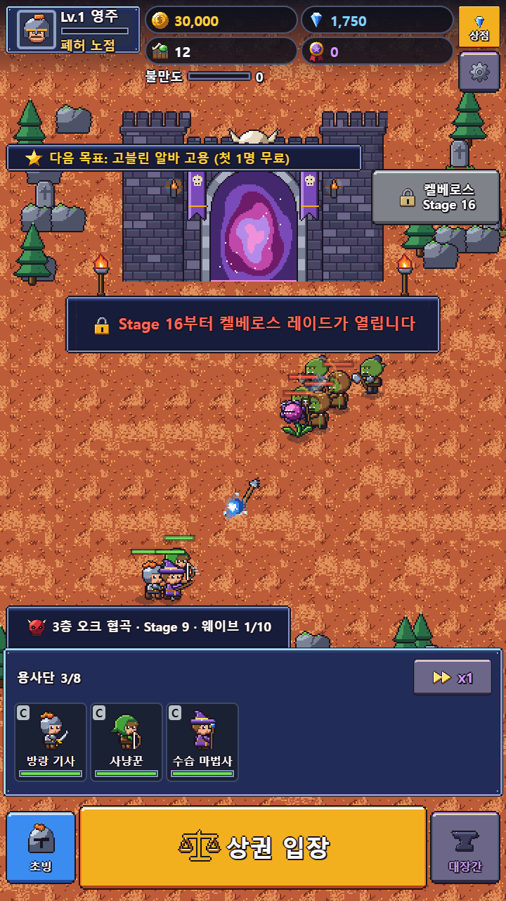
9.5직접 플레이
각 버전의 웹 빌드(단일 HTML)를 그대로 넣었습니다. 마우스로 누르면 터치처럼 동작합니다.
- 상권 입장으로 상점가에 들어가고, 하단 5탭에서 건설·초빙·대장간·레이드·금고를 엽니다.
- Esc 키는 Android의 뒤로 가기와 같습니다.
- 진행 상황은 이 브라우저에만 저장되며, 버전끼리 섞이지 않습니다.
정리: 내가 AI와 일하는 방식
이 프로젝트에서 굳힌 다섯 가지 원칙과, 아직 남은 일
10.1AI 활용 원칙 5가지
10.2남은 일
게임
- 강화 시스템 항목 채우기 (연결 구조만 있고 항목 0개)
- 보석·소환·패스를 서버에서 확정하는 구조
- 코드 구조 분리, 밸런스 데이터 외부화 (개선안 v1 보류 항목)
검증
- 여러 실기기에서 성능·발열·노치 화면 확인
- v7·v8 APK 기기 테스트, 움직임 줄이기 실기기 확인
- 손맛·글자 크기는 직접 플레이 테스트로 확인
10.3이 포트폴리오도 같은 방식으로
비교 영상은 손으로 녹화하지 않았습니다. 두 버전을 같은 상태로 만든 뒤 같은 순서로 버튼을 누르는 스크립트(rec_game.js)로 자동 플레이하고, 화면 프레임을 받아 장면 제목과 바뀐 점을 얹어 MP4로 인코딩했습니다(compose.html). 발표 자료(PPT)도 같은 내용으로 스크립트가 만듭니다.